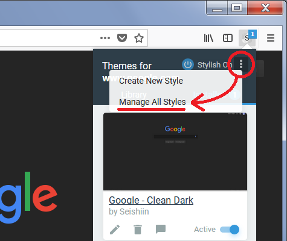
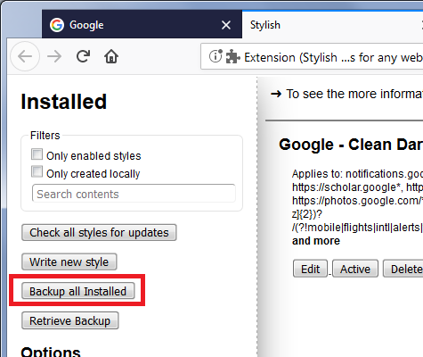
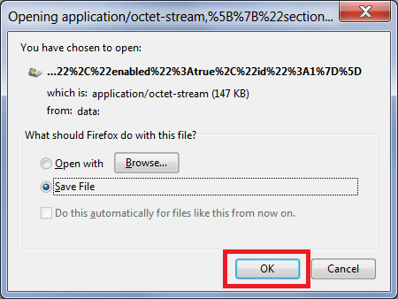
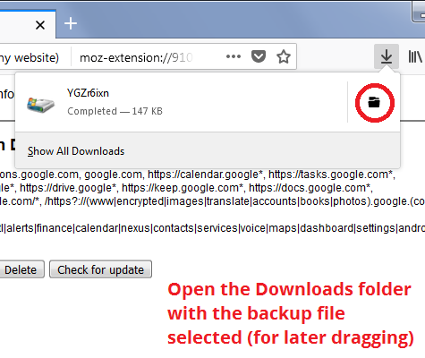
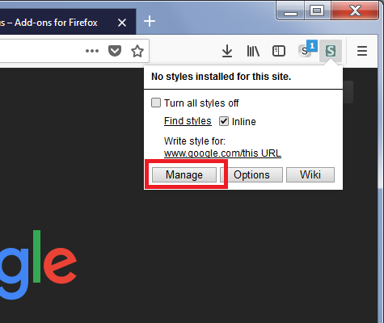
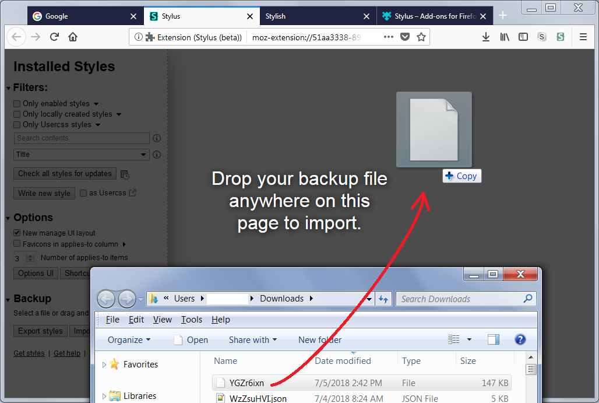

On July 3, 2018, Stylish 3.1.1 and all earlier versions were removed from the Mozilla Add-ons site due to violations of data privacy policy (Notice). If you are adopting Stylus instead, this page describes how to move your user styles from Stylish to Stylus.
If you are using Stylish 2.0.7 - 2.1.1 – the Legacy extension – Steps 1-3 on this page are not applicable to you. Please see Stylish Migration (from version 2.x to another version/extension) instead.
Here’s the process:
(1) Call up Stylish’s “Manage All Styles” page
Note: You might need to re-enable Stylish on the Add-ons page first.

(2) Click the “Backup all Installed” button and then Save the file


(3) Open the Downloads folder to the backup file using the “Open Containing Folder” button on the Downloads panel

(4) If you haven’t already, install the Stylus extension from the Add-ons site
(5) Call up Stylus’s Manage page

(6) Position the window with the Downloads folder so you can drag and drop the Stylish backup file onto the Stylus Manage page to import your styles

That’s it. You can disable (or remove) Stylish now.